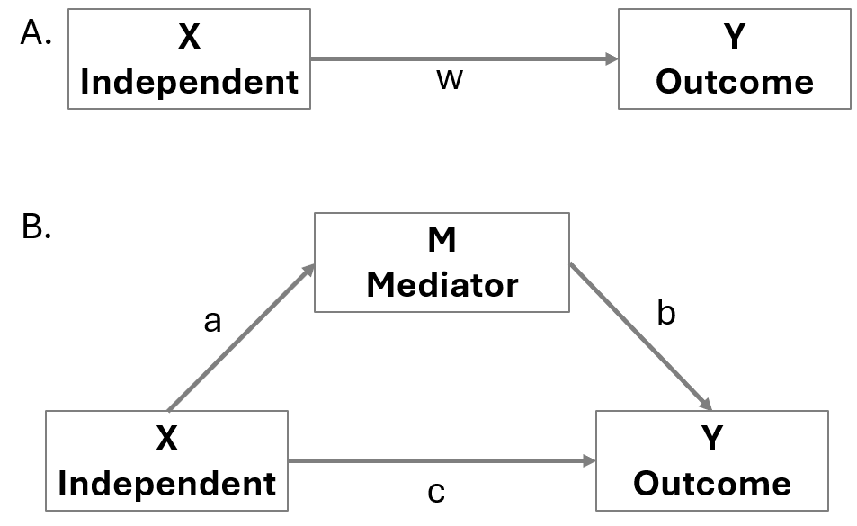
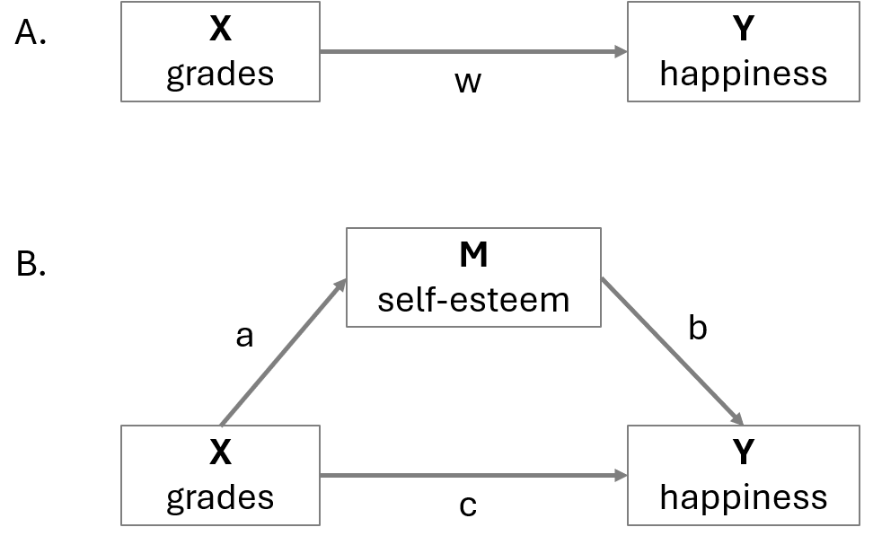
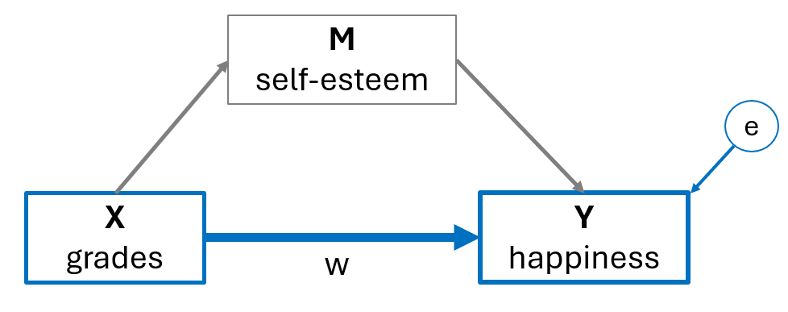
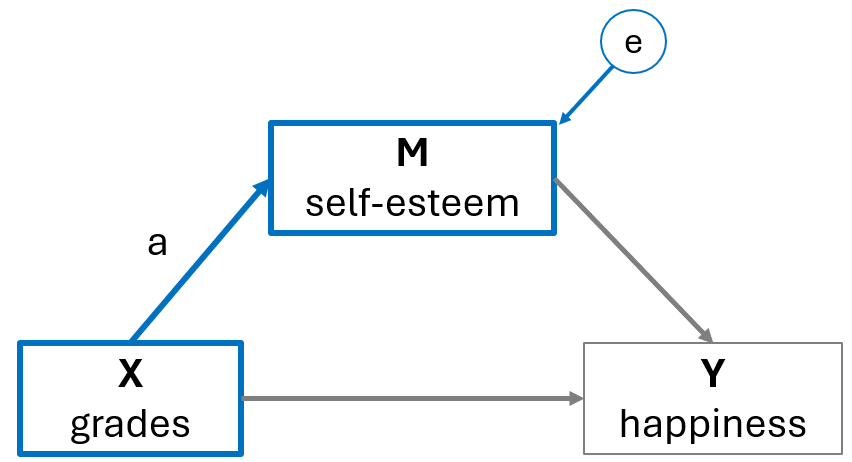
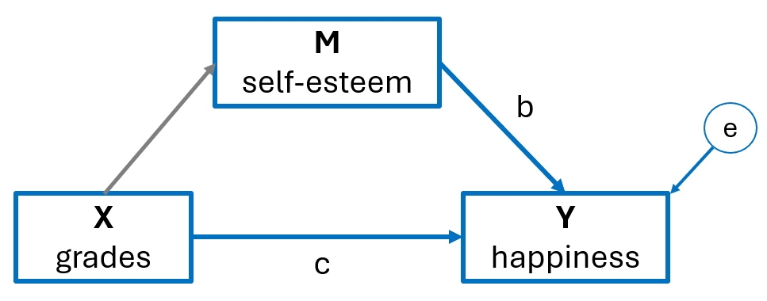
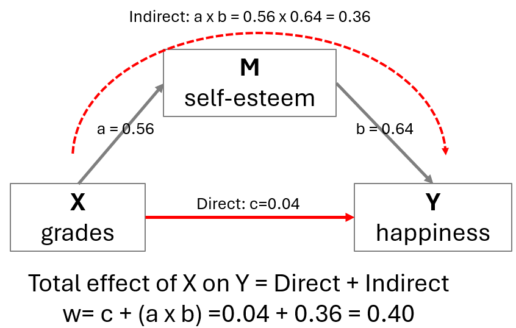
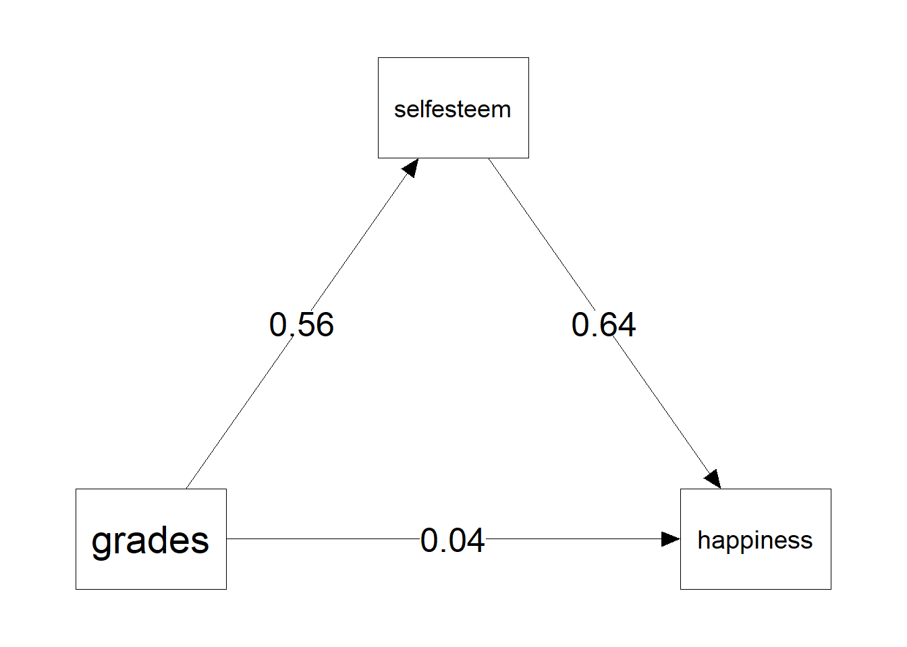
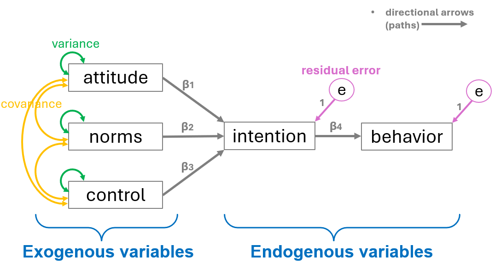
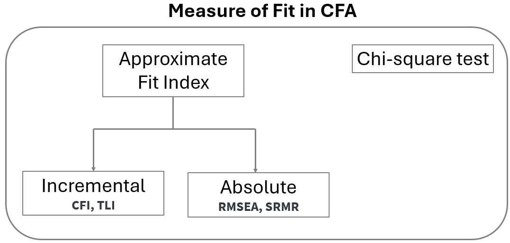
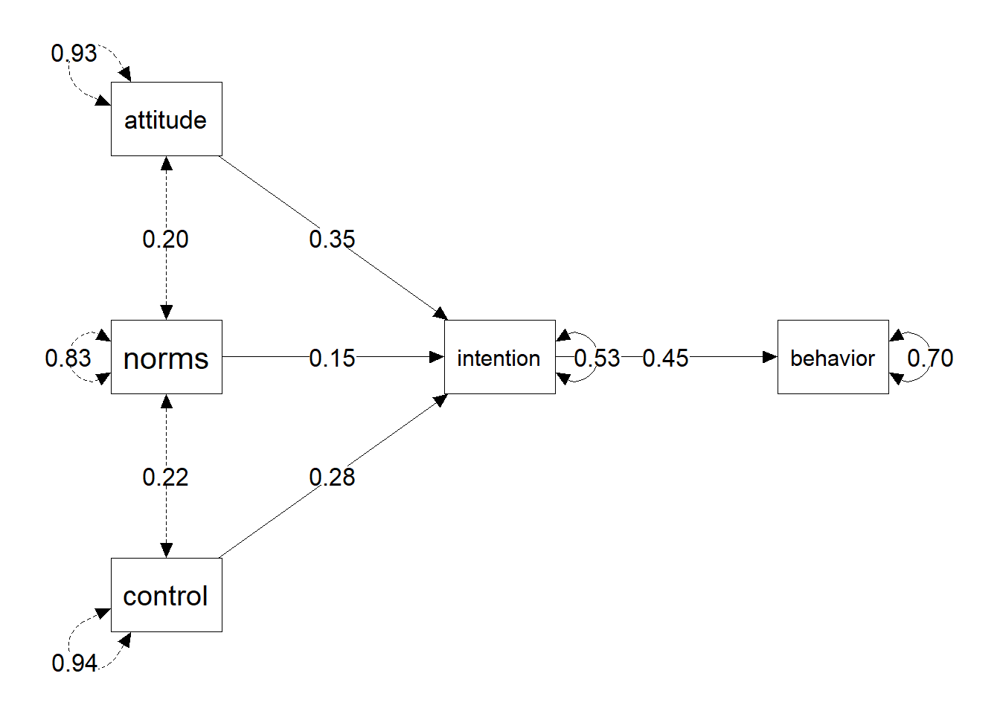

# Required packages for this R script
library(lavaan)
library(semPlot)
library(readxl)9 Mediation and Path Analysis
First, we load the following R packages in our R session:
9.1 Mediation analysis
A single mediation analysis is based on the estimation of the four pathways, w, a, b, and c shown in Figure 9.1. In Figure 9.1(A), the “w” path represents the total X→Y effect. In Figure 9.1(B), the “a” path represents the X→M effect, the “b” path represents the M→Y effect, and the “c” path represents the direct X→Y effect. In traditional mediation analysis, the paths coefficients are estimated using linear regression equations.
Mediation analysis is based on the assumption of temporal precedence of the independent variable X, mediator, and outcome, which means that changes in the X are assumed to precede changes in the mediator, and that changes in the mediator are assumed to precede changes in the outcome.

It is important to note that, like any regression-based analysis, mediation analysis cannot establish causal associations unless it is grounded in an experimental design. Drawing causal inferences requires rigorous methodological controls, including random assignment, temporal precedence, and the elimination of alternative explanations.
Direct and indirect effects
Mediation analysis decomposes the total X→Y effect (w) into a direct effect (c) and an indirect effect through a mediator variable, which is the product of a and b (axb).
9.2 Example
Assume that previous research has demonstrated that higher grades are associated with increased happiness: X (grades) → Y (happiness) (Figure 9.2 A). In our theory, we also hypothesize that good grades enhance self-esteem, which in turn increases happiness: X (grades) → M (self-esteem) → Y (happiness) (Figure 9.1 B).

9.3 Import the dataset
If the dataset happiness is saved in the subfolder named “data” of our RStudio project, we can read it with the read_excel() function from readxl package as follows:
dat_happiness <- read_excel("data/happiness.xlsx")
dat_happiness# A tibble: 100 × 3
grades selfesteem happiness
<dbl> <dbl> <dbl>
1 6 5 6
2 7 5 5
3 7 7 4
4 8 4 8
5 4 3 5
6 4 4 7
7 9 7 8
8 5 0 4
9 8 7 7
10 4 3 4
# ℹ 90 more rows9.3.1 Baron & Kenny method
The following shows the basic steps for mediation analysis suggested by Baron & Kenny (1986). A mediation analysis is comprised of three sets of regression: (1) X → Y, (2) X → M, and (3) X + M → Y. This 3-step method used to describe a mediation effect. Steps 1 and 2 use basic linear regression while steps 3 use multiple regression.
- Step 1: Estimate the association between X on Y (grades on happiness). The total effect “w” must be significantly different from 0. If there is no association between X and Y, there is nothing to mediate.

\[Y = intercept \ + \text{w} \cdot X + e\]
where \(e\) is the residual error of the model.
step_1 <- lm(happiness ~ grades, data = dat_happiness)
summary(step_1)
Call:
lm(formula = happiness ~ grades, data = dat_happiness)
Residuals:
Min 1Q Median 3Q Max
-5.0262 -1.2340 -0.3282 1.5583 5.1622
Coefficients:
Estimate Std. Error t value Pr(>|t|)
(Intercept) 2.8572 0.6932 4.122 7.88e-05 ***
grades 0.3961 0.1112 3.564 0.000567 ***
---
Signif. codes: 0 '***' 0.001 '**' 0.01 '*' 0.05 '.' 0.1 ' ' 1
Residual standard error: 1.929 on 98 degrees of freedom
Multiple R-squared: 0.1147, Adjusted R-squared: 0.1057
F-statistic: 12.7 on 1 and 98 DF, p-value: 0.0005671
\[happiness = 2.86 \ + 0.40 \cdot grades\] Therefore, the total effect w = 0.40 is statistical significant (p<0.001).
(NOTE: Even if we don’t find a significant association between X and Y, we could move forward to the next step if we have a good theoretical background about their association.)
- Step 2: Estimate the association between X on M (grades on self-esteem). Path “a” must be significantly different from 0; The independent variable and the mediator must be associated. If X and M have no association, M is just a third variable that may or may not be associated with Y. A mediation makes sense only if X affects M.

\[M = intercept \ + \text{a} \cdot X + e\]
where \(e\) is the residual error of the model.
step_2 <- lm(selfesteem ~ grades, data = dat_happiness)
summary(step_2)
Call:
lm(formula = selfesteem ~ grades, data = dat_happiness)
Residuals:
Min 1Q Median 3Q Max
-4.3046 -0.8656 0.1344 1.1344 4.6954
Coefficients:
Estimate Std. Error t value Pr(>|t|)
(Intercept) 1.49952 0.58920 2.545 0.0125 *
grades 0.56102 0.09448 5.938 4.39e-08 ***
---
Signif. codes: 0 '***' 0.001 '**' 0.01 '*' 0.05 '.' 0.1 ' ' 1
Residual standard error: 1.639 on 98 degrees of freedom
Multiple R-squared: 0.2646, Adjusted R-squared: 0.2571
F-statistic: 35.26 on 1 and 98 DF, p-value: 4.391e-08
\[selfesteem = 1.50 \ + 0.56 \cdot grades\] Therefore, the effect of X on M (a = 0.56) is statistical significant (p<0.001).
- Step 3: Estimate the effects of both X and M on Y. Path “b” must be significantly different from 0; mediator and outcome must be associated. Additionally, the path “c” should be non-significant and nearly 0. The effect of X on Y will disappear (full mediation) or at least weaken (partial mediation) when M is included in the regression. The effect of X on Y goes through M.

\[Y = intercept \ + c \cdot X + \text{b} \cdot M + e\]
where \(e\) is the residual error of the model.
step_3 <- lm(happiness ~ grades + selfesteem, data = dat_happiness)
summary(step_3)
Call:
lm(formula = happiness ~ grades + selfesteem, data = dat_happiness)
Residuals:
Min 1Q Median 3Q Max
-3.7631 -1.2393 0.0308 1.0832 4.0055
Coefficients:
Estimate Std. Error t value Pr(>|t|)
(Intercept) 1.9043 0.6055 3.145 0.0022 **
grades 0.0396 0.1096 0.361 0.7187
selfesteem 0.6355 0.1005 6.321 7.92e-09 ***
---
Signif. codes: 0 '***' 0.001 '**' 0.01 '*' 0.05 '.' 0.1 ' ' 1
Residual standard error: 1.631 on 97 degrees of freedom
Multiple R-squared: 0.373, Adjusted R-squared: 0.3601
F-statistic: 28.85 on 2 and 97 DF, p-value: 1.471e-10
\[happiness = 1.90 \ + 0.04 \cdot grades + 0.64 \cdot selfesteem\]
Therefore, the effect of M (self-esteem) on Y (happiness), controlling for X (grades), is statistically significant (b = 0.64, p < 0.001), whereas the effect of X (grades) on Y (happiness), controlling for M (self-esteem), is weakened and not statistically significant (c = 0.04, p = 0.719).
Total, direct and indirect effects
The total effect (w = 0.40) is just the coefficient (w) we would find by fitting a simple regression model (e.g., \(Y = intercept \ + \text{w} \cdot X\)).
The indirect effect is the effect of X on Y, through the mediator M. It’s obtained by multiplying \(a \times b = 0.56 \times 0.64 = 0.36\).
The direct effect (c = 0.04) is the partial effect of of X on Y after controlling for M.

In practice, a simple mediation model decompose the total effect of X on Y, in a direct and indirect effect. Therefore:
\[w = c + (a \times b) = 0.04 + (0.56 \times 0.64) = 0.04 + 0.36 = 0.40\]
9.3.2 Mediation Analysis with R
We specify and estimate our mediation model using the sem() function from the lavaan package in R.
# 1. Define the model
# a = path from grades to self-esteem
# b = path from self-esteem to happiness
# c = direct path from grades to happiness
mediation_model <- '
# Regressions
selfesteem ~ a*grades
happiness ~ c*grades + b*selfesteem
# Define the effects for the summary output
direct := c
indirect := a * b
total := c + (a * b)
'
# 2. Fit the model
med_model <- sem(model = mediation_model, data = dat_happiness)
# 3. View the results
summary(med_model, standardize = TRUE)lavaan 0.6-21 ended normally after 1 iteration
Estimator ML
Optimization method NLMINB
Number of model parameters 5
Number of observations 100
Model Test User Model:
Test statistic 0.000
Degrees of freedom 0
Parameter Estimates:
Standard errors Standard
Information Expected
Information saturated (h1) model Structured
Regressions:
Estimate Std.Err z-value P(>|z|) Std.lv Std.all
selfesteem ~
grades (a) 0.561 0.094 5.998 0.000 0.561 0.514
happiness ~
grades (c) 0.040 0.108 0.367 0.714 0.040 0.034
selfesteem (b) 0.635 0.099 6.418 0.000 0.635 0.593
Variances:
Estimate Std.Err z-value P(>|z|) Std.lv Std.all
.selfesteem 2.633 0.372 7.071 0.000 2.633 0.735
.happiness 2.581 0.365 7.071 0.000 2.581 0.627
Defined Parameters:
Estimate Std.Err z-value P(>|z|) Std.lv Std.all
direct 0.040 0.108 0.367 0.714 0.040 0.034
indirect 0.357 0.081 4.382 0.000 0.357 0.305
total 0.396 0.110 3.600 0.000 0.396 0.339The path estimates (regression coefficients):
- \(a=0.56\) (p <0.001)
- \(b=0.64\) (<0.001)
- \(c = 0.04\) (p = 0.714).
The mediation estimates:
- The direct effect (\(c = 0.04\); p = 0.714)
- The indirect effect (\(a \times b = 0.36\); p <0.001).
- The total effect (\(w = c + a \times b = 0.40;\) p<0.001)
We can also represent the mediation estimates in a plot:
ly <- matrix(c(
0, 1,
1, -1,
-1, -1
), ncol = 2, byrow = TRUE)
semPaths(med_model,
whatLabels = "est",
layout = ly,
nCharNodes = 0, # Use full names
shapeMan = "rectangle",
sizeMan = 18,
sizeMan2 = 12,
residuals = FALSE,
intercepts = FALSE,
color = "white",
edge.color = "black",
edge.label.cex = 1.8,
asize = 5)
9.4 Path analysis
9.4.1 Basic concepts
Path analysis can be used to test more complex theories of observed variables (or manifest variables). It is an extension of multiple regression and is used primarily to examine direct and indirect associations among variables.
In this example, we look at the theory of planned behavior (TPB). This theory is a psychological theory that links beliefs to behavior. In its simplified form, the TPB proposes that an individual’s intention to perform a specific behavior influences the individual’s decision to enact that behavior, and attitude toward the behavior, perception of norms pertaining to that behavior, and perception of control over performing that behavior influence the individual’s intention to perform the behavior.
We can specify the Theory of Planned Behavior as a path diagram by drawing the observed variables and the directional associations (paths) between the variables as implied by the theory, where rectangles represent the variables and directional arrows represent the directional relations between variables, which is depicted in the path diagram below:

Exogenous variables: Independent variables that are influenced by factors outside the model and, in turn, influence endogenous variables. In path diagrams, arrows originate from exogenous variables but do not point to them.
Endogenous variables: Dependent variables that are explained by exogenous variables in the model. Arrows point toward them and these represent causal paths. Note that an endogenous variable may also be specified as the predictor of another endogenous variable, as is the case in our example path diagram.
Path coefficients are regression coefficients (typically denoted as \(\beta_1-\beta_4\), or sometimes as \(p_1-p_4\)) that represent direct effects of one variable on another.
Variances are typically represented as curved double-sided arrows, where both arrows point to the same variable. Covariances are also represented as double-sided arrows in which the arrows connect two distinct variables.
(Residual) error terms (which are sometimes called disturbances) are added to endogenous variables.
The equations of this model are:
\[intention = intercept + \beta_1 attitude + \beta_2 norms + \beta_3 control + e\]
and
\[behavior = intercept + \beta_4 intention + e\]
9.4.2 Model Identification
Model identification refers to determining whether there is sufficient information in the observed data to estimate the model’s parameters (e.g., regression coefficients, variances) uniquely.
A model is overidentified when there are more unique (non-redundant) sources of information than free parameters, which means that the degrees of freedom (df) is greater than zero. This is ideal because it allows for both parameter estimation and model fit testing.
A just-identified model has an equal number of unique sources of information and free parameters; while the model can be estimated, its fit to the data cannot be tested.
An underidentified model has fewer unique sources of information than parameters, meaning it lacks enough information to estimate all free parameters, making it impossible to fit the model reliably.
The formula for calculating the number of unique (non-redundant) sources of information available for a particular model is as follows:
\[i = \frac{p \cdot (p+1)}{2}\]
where \(p\) is the number of observed variables to be modeled.
In the path diagram we specified above, there are five observed variables: Attitude, Norms, Control, Intention, and Behavior. Thus, in the following formula, \(p\) is equal to 5, and thus the number of unique (non-redundant) sources of information is 15.
\[i = \frac{5 \cdot (5+1)}{2} = \frac{30}{2} = 15\]
To count the number of free parameters (\(k\)), simply add up the number of the specified direction relations, variances, covariances, and error terms in the path analysis model. In our example:
\[k=12\]
To calculate the degrees of freedom (\(df\)) for the model, subtract the number of free parameters from the number unique (non-redundant) sources of information, which in this example is equal to 3, as shown below.
\[df = i - k = 15 - 12 = 3\]
Thus, the degrees of freedom for the model is 3, which means the model is over-identified.
9.4.3 Model Fit in path analysis
There are many measures of fit in path analysis:

Chi-square test. The chi-square test can be used to assess whether the model fits the data adequately. A non-significant chi-square value (e.g., p ≥ 0.05) indicates that the model fits the data reasonably well. However, the test is highly sensitive to sample size—tending to yield non-significant results in small samples even when fit is poor, and significant results in large samples even when the model fits well.
The Comparative Fit Index (CFI): The CFI is an incremental fit index, meaning it evaluates how much the hypothesized model improves upon a baseline (or null) model that assumes no associations among variables. CFI values range from 0 to 1, with higher values indicating better fit. (Rule of thumb: CFI values above 0.90 are generally considered indicative of acceptable model fit, while values above 0.95 suggest a good model fit).
Tucker-Lewis Index (TLI): The TLI penalizes model complexity more heavily than the CFI. TLI values can sometimes exceed 1.0, making the index somewhat unstable. Given the close association between TLI and CFI, it is generally recommended to report only one of the two.
RMSEA (Root Mean Square Error of Approximation): The RMSEA is an absolute fit index interpreted as a badness-of-fit measure, with 0.00 indicating a perfect fit. It tends to favor models with more degrees of freedom and larger sample sizes. A unique feature of RMSEA is that it is accompanied by a 90% confidence interval. Although there is ongoing debate about acceptable RMSEA values, a common consensus is that \(RMSEA \geq 0.10\) indicates poor fit, while \(RMSEA \leq 0.05\) suggests a good fit. When interpreting the RMSEA, it’s important to examine the upper bound of the confidence interval to ensure it does not approach problematic levels.
SRMR (Standardized Root Mean Square Residual): The SRMR is another absolute fit index and, like RMSEA, is a badness-of-fit statistic—values closer to 0.00 indicate better fit. The SRMR is a standardized version of the Root Mean Square Residual (RMR), which measures the mean absolute covariance residual. Standardization facilitates interpretation across different models. Poor model fit is typically flagged when \(SRMR \geq 0.10\).
According to Hu and Bentler (1999), an acceptable fit is achieved when \(CFI \geq 0.95\) and \(SRMR \leq 0.08\)—a guideline known as the combination rule. This recommendation, however, remains a topic of debate.
The conventional cutoffs for the aforementioned model fit indices – like any rule of thumb – should be applied with caution. Additionally, these indices do not always align with one another, which is why researchers often examine multiple fit indices to make an informed judgment about whether a model adequately fits the data.
9.5 Import the dataset
If the dataset PlannedBehavior is saved in the subfolder named “data” of our RStudio project, we can read it with the read_excel() function from readxl package as follows:
dat_behavior <- read_excel("data/PlannedBehavior.xlsx")
dat_behavior# A tibble: 199 × 5
attitude norms control intention behavior
<dbl> <dbl> <dbl> <dbl> <dbl>
1 2.31 2.31 2.03 2.5 2.62
2 4.66 4.01 3.63 3.99 3.64
3 3.85 3.56 4.2 4.35 3.83
4 4.24 2.25 2.84 1.51 2.25
5 2.91 3.31 2.4 1.45 2
6 2.99 2.51 2.95 2.59 2.2
7 3.96 4.65 3.77 4.08 4.41
8 3.01 2.98 1.9 2.58 4.15
9 4.77 3.09 3.83 4.87 4.35
10 3.67 3.63 5 3.09 3.95
# ℹ 189 more rowsThere are 5 variables and 199 cases in the data frame.
9.6 Path Analysis in R
9.6.1 The path model with lavaan
We specify and estimate our path model using the sem() function from the lavaan package in R.
# Define the path model for Theory of Planned Behavior
tpb_model <- '
# Predicting Intention
intention ~ b1*attitude + b2*norms + b3*control
# Predicting Behavior
behavior ~ b4*intention
# Intercepts (Explicitly defined)
intention ~ 1
behavior ~ 1
# Indirect effects
indirect_att := b1 * b4
indirect_norm := b2 * b4
indirect_ctrl := b3 * b4
'
tpb_fit <- sem(tpb_model, data = dat_behavior)
summary(tpb_fit,
fit.measures = TRUE,
standardized = TRUE,
rsquare = TRUE)lavaan 0.6-21 ended normally after 2 iterations
Estimator ML
Optimization method NLMINB
Number of model parameters 8
Number of observations 199
Model Test User Model:
Test statistic 2.023
Degrees of freedom 3
P-value (Chi-square) 0.568
Model Test Baseline Model:
Test statistic 137.622
Degrees of freedom 7
P-value 0.000
User Model versus Baseline Model:
Comparative Fit Index (CFI) 1.000
Tucker-Lewis Index (TLI) 1.017
Loglikelihood and Information Criteria:
Loglikelihood user model (H0) -465.934
Loglikelihood unrestricted model (H1) -464.922
Akaike (AIC) 947.868
Bayesian (BIC) 974.214
Sample-size adjusted Bayesian (SABIC) 948.870
Root Mean Square Error of Approximation:
RMSEA 0.000
90 Percent confidence interval - lower 0.000
90 Percent confidence interval - upper 0.103
P-value H_0: RMSEA <= 0.050 0.735
P-value H_0: RMSEA >= 0.080 0.120
Standardized Root Mean Square Residual:
SRMR 0.017
Parameter Estimates:
Standard errors Standard
Information Expected
Information saturated (h1) model Structured
Regressions:
Estimate Std.Err z-value P(>|z|) Std.lv Std.all
intention ~
attitude (b1) 0.352 0.058 6.068 0.000 0.352 0.370
norms (b2) 0.153 0.059 2.577 0.010 0.153 0.152
control (b3) 0.275 0.058 4.740 0.000 0.275 0.291
behavior ~
intention (b4) 0.453 0.065 7.014 0.000 0.453 0.445
Intercepts:
Estimate Std.Err z-value P(>|z|) Std.lv Std.all
.intention 0.586 0.237 2.470 0.014 0.586 0.639
.behavior 1.743 0.203 8.595 0.000 1.743 1.867
Variances:
Estimate Std.Err z-value P(>|z|) Std.lv Std.all
.intention 0.530 0.053 9.975 0.000 0.530 0.631
.behavior 0.699 0.070 9.975 0.000 0.699 0.802
R-Square:
Estimate
intention 0.369
behavior 0.198
Defined Parameters:
Estimate Std.Err z-value P(>|z|) Std.lv Std.all
indirect_att 0.160 0.035 4.589 0.000 0.160 0.165
indirect_norm 0.069 0.029 2.419 0.016 0.069 0.067
indirect_ctrl 0.125 0.032 3.927 0.000 0.125 0.129
9.6.2 Explantion of the results
Let’s examine the most interesting results separately for each group of estimates and measures.
Intercepts of the model equations
The intercepts of the equations of the model are following:
lhs est se z pvalue ci.lower ci.upper std.all
5 intention 0.586 0.237 2.470 0.014 0.121 1.051 0.639
6 behavior 1.743 0.203 8.595 0.000 1.345 2.140 1.867
Regression (Path) Coefficients
The direct effects (path coefficients) are obtained from regression analysis. The following table summarizes hypotheses testing results of the study.
lhs rhs label est se z pvalue ci.lower ci.upper std.all
1 intention attitude b1 0.352 0.058 6.068 0.00 0.239 0.466 0.370
2 intention norms b2 0.153 0.059 2.577 0.01 0.036 0.269 0.152
3 intention control b3 0.275 0.058 4.740 0.00 0.161 0.389 0.291
4 behavior intention b4 0.453 0.065 7.014 0.00 0.327 0.580 0.445The path coefficient (i.e., regression coefficient b) between attitude and intention is statistically significant and positive (\(b_1 = 0.352\), p < 0.001). The path coefficient between norms and intention is statistically significant and positive (\(b_2 = 0.153\), p = 0.010). The path coefficient between control and intention is statistically significant and positive (\(b_3 = 0.275\), p < 0.001). Of the three predictors of intention, attitude exhibited the strongest relative effect (i.e., the statndardized estimate is \(std.all = 0.370\)). Finally, the path coefficient between intention and behavior is statistically significant and positive (\(b_4 = 0.453\), p < 0.001).
According to results of the above tables, the equations can be expressed as follows:
\[intention = 0.586 + 0.352 \cdot attitude + 0.153 \cdot norms + 0.275 \cdot control\]
and
\[behavior = 1.743 + 0.453 \cdot intention\]
R-Squared values
intention behavior
0.369 0.198 We see the R-Squared value for the outcome variable intention, which is equal to 0.369; that is, collectively, attitude, norms, and control explain 36.9% of the variance in intention. Additionally, intention explains 19.8% of the variance in behavior.
Indirect Effects
Moreover, the indirect effects are reported in the following table:
lhs rhs est se z pvalue ci.lower ci.upper std.all
18 indirect_att b1*b4 0.160 0.035 4.589 0.000 0.092 0.228 0.165
19 indirect_norm b2*b4 0.069 0.029 2.419 0.016 0.013 0.125 0.067
20 indirect_ctrl b3*b4 0.125 0.032 3.927 0.000 0.062 0.187 0.129For example, the estimate for the indirect effect of the path attitude=>intention=>behavior is calculated as 0.35*0.45 = 0.16.
Variances and Covariances
lhs rhs est se z pvalue ci.lower ci.upper std.all
7 intention intention 0.530 0.053 9.975 0 0.426 0.634 0.631
8 behavior behavior 0.699 0.070 9.975 0 0.561 0.836 0.802
9 attitude attitude 0.928 0.000 NA NA 0.928 0.928 1.000
10 attitude norms 0.200 0.000 NA NA 0.200 0.200 0.227
11 attitude control 0.334 0.000 NA NA 0.334 0.334 0.357
12 norms norms 0.830 0.000 NA NA 0.830 0.830 1.000
13 norms control 0.220 0.000 NA NA 0.220 0.220 0.249
14 control control 0.939 0.000 NA NA 0.939 0.939 1.000Using path analysis, we can also explicitly model the variance of the exogenous variables (e.g., attitude-attitude variance = 0.93), the covariances (correlations) between the exogenous variables (e.g., norms-attitude covariance= 0.20), and the residual errors of the endogenous variables in the model (e.g., intention res. error = 0.53).
We can also present the model with a path diagram. All options regard aesthetics of the diagram are shown below:
# 1. Define the grid layout manually
# Rows represent vertical position, Columns represent horizontal flow
ly <- matrix(NA, nrow = 3, ncol = 3)
ly[1, 1] <- "attitude"
ly[2, 1] <- "norms"
ly[3, 1] <- "control"
ly[2, 2] <- "intention"
ly[2, 3] <- "behavior"
# 2. Plot without the 'groups' argument to avoid the subscript error
semPaths(tpb_fit,
whatLabels = "est", # Show standardized weights
layout = ly,
style = "ram", # Professional SEM style
nCharNodes = 0, # Don't abbreviate variable names
intercepts = FALSE, # Don't plot the constant/intercept nodes
residuals = TRUE, # Show the error terms
sizeMan = 12, # Size of the boxes
sizeMan2 = 8,
mar = c(5, 5, 5, 5),
edge.label.cex = 1.2, # Size of the path numbers
fade = FALSE, # Keep all lines solid black for print
color = "white", # Standard textbook white boxes
edge.color = "black")
9.6.3 Assessment of Model Fit
The path model for the Theory of Planned Behavior demonstrated an excellent fit to the data. The chi-square test was non-significant, \(\chi^2(3) = 2.023, p = 0.568\), suggesting no significant discrepancy between the hypothesized model and the observed data. Complementary fit indices further supported this conclusion, with a Comparative Fit Index (CFI) of \(1.000\) and a Tucker-Lewis Index (TLI) of \(1.017\), both exceeding the traditional \(0.95\) threshold for superior fit. The Root Mean Square Error of Approximation (RMSEA) was \(0.000\) (\(90\%\) CI \([0.000, 0.103]\)), and the Standardized Root Mean Square Residual (SRMR) was \(0.017\), well below the recommended \(0.05\) and \(0.08\) cut-offs, respectively. Overall, these measures indicate that the model provides a highly robust representation of the relationships between attitude, social norms, perceived control, intention, and behavior